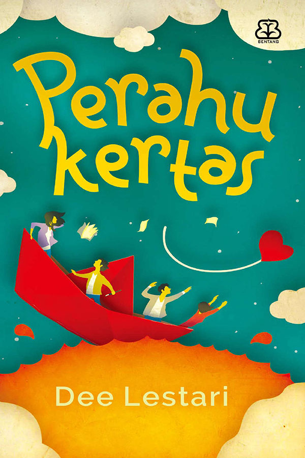
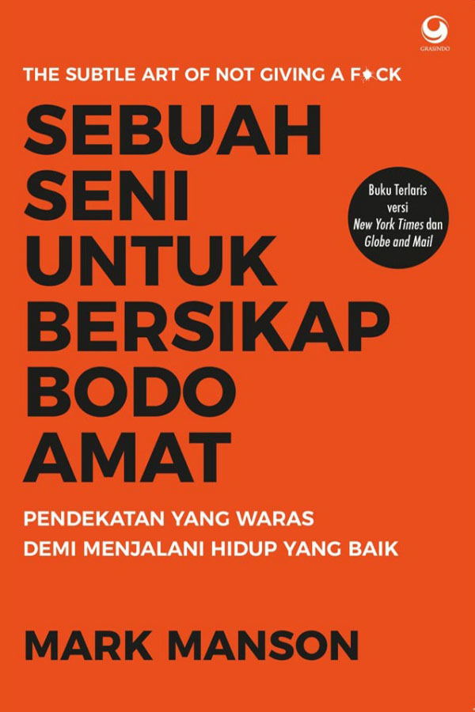
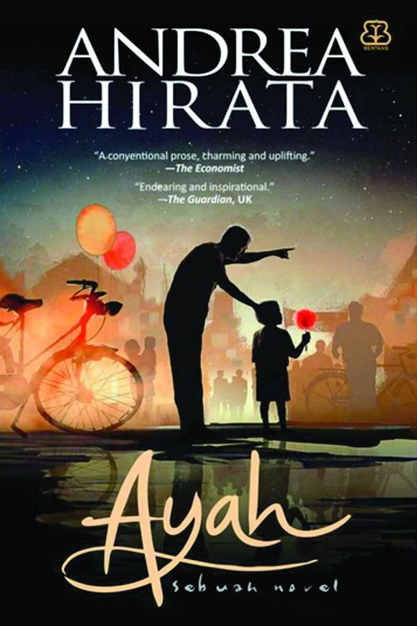
 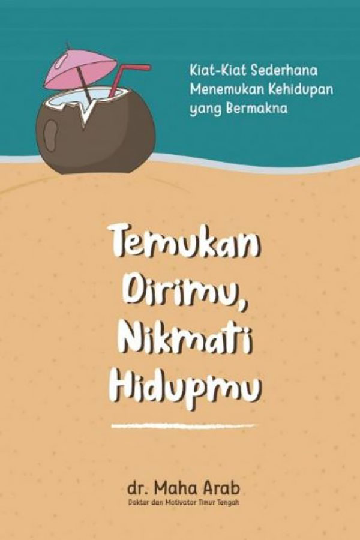
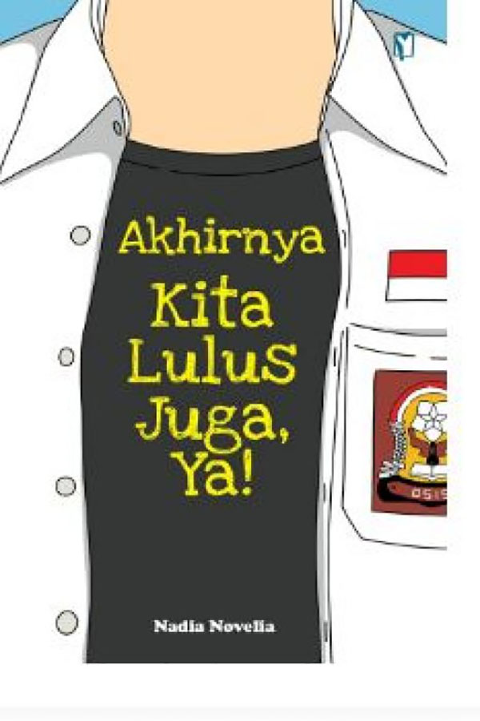
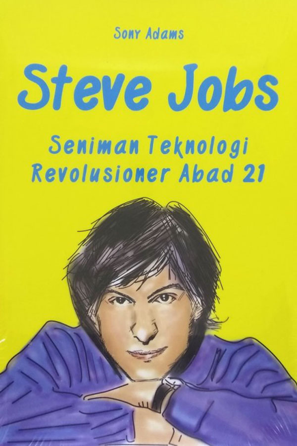
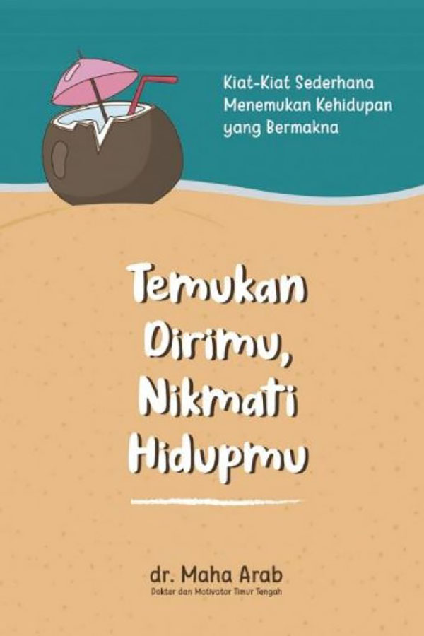
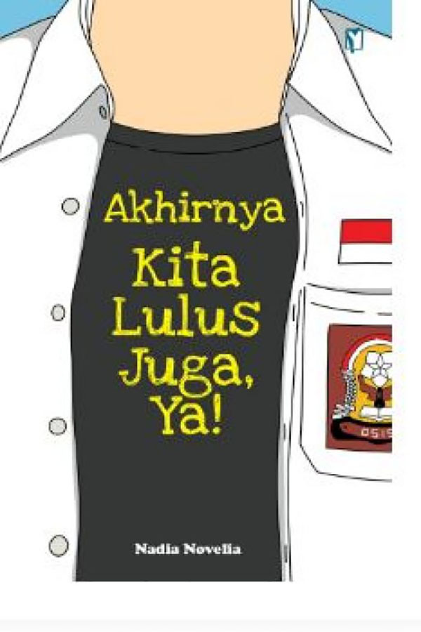
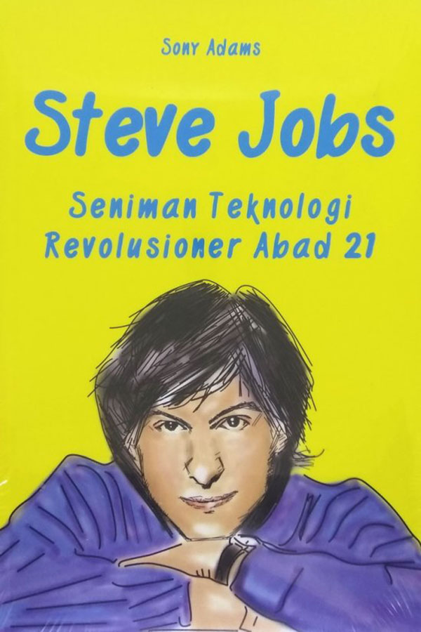
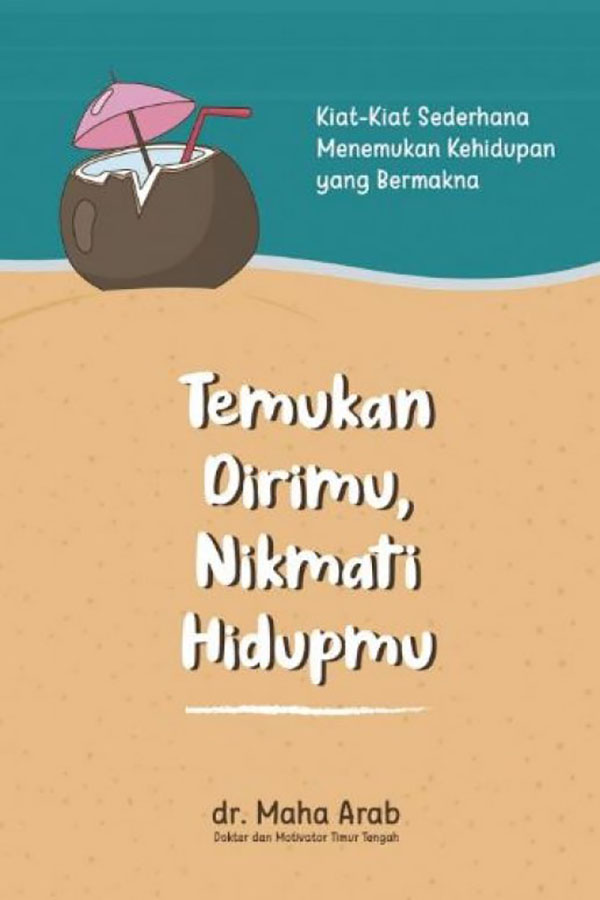
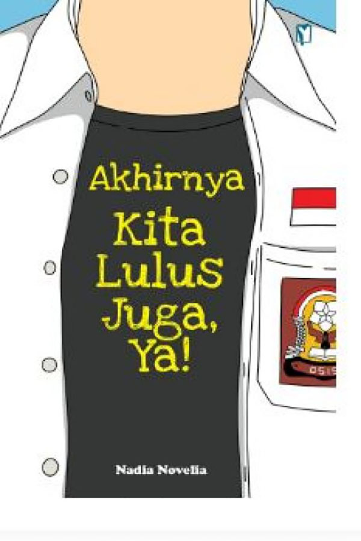
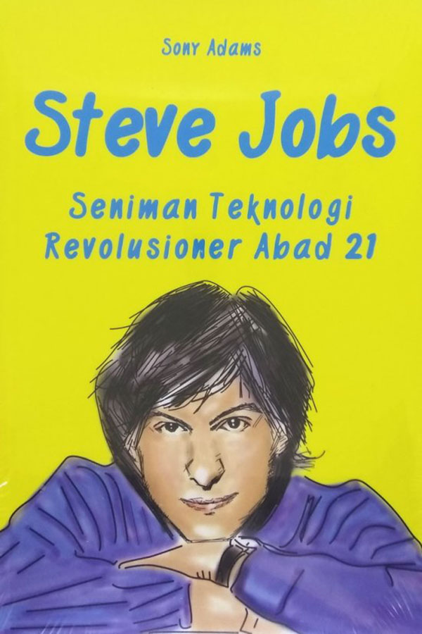
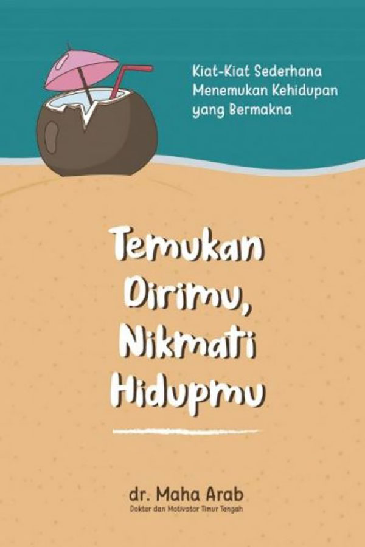
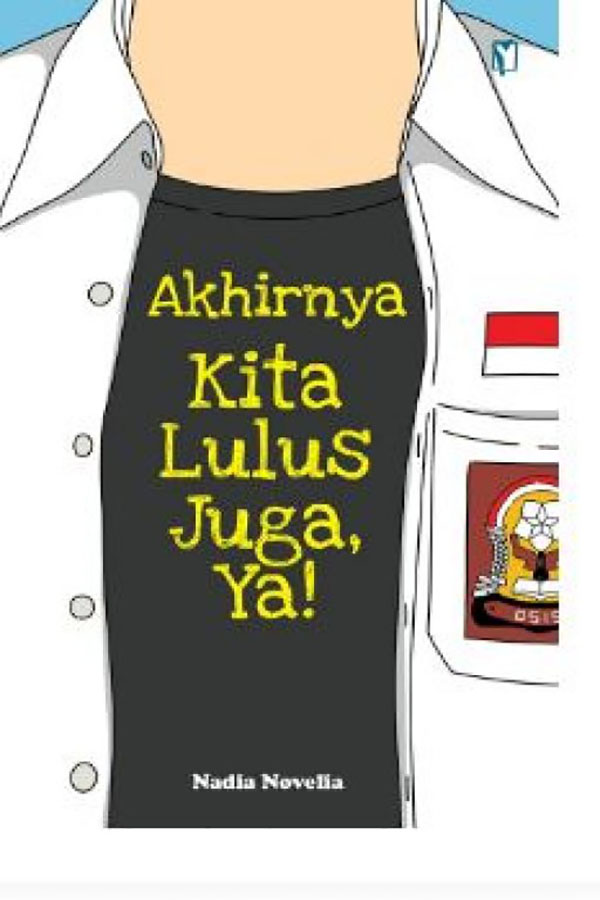
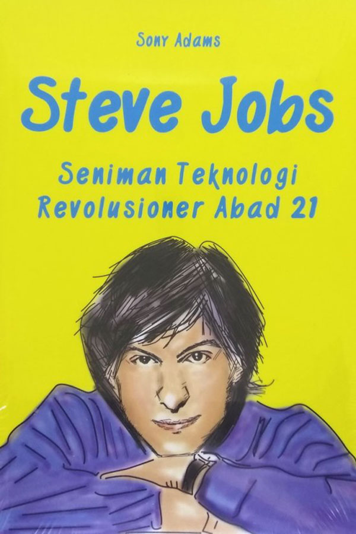
Namanya Kugy. Mungil, pengkhayal, dan berantakan. Dari benaknya, mengalir untaian dongeng indah. Keenan belum pernah bertemu manusia seaneh itu .... Namanya Keenan. Cerdas, artistik, dan penuh kejutan. Dari tangannya, mewujud lukisan-lukisan magis. Kugy belum pernah bertemu manusia seajaib itu .... Dan kini mereka berhadapan di antara hamparan misteri dan rintangan. Akankah dongeng dan lukisan itu bersatu? Akankah hati dan impian mereka bertemu?
Download BukuTuhan Ada di Hatimu karya Husein Ja’far Al-Hadar memberikan pandangan berbagai hal dari sudut pandang Islam yang indah. Termasuk dengan kondisi kekinian, yang semuanya dapat dijawab dengan ajaran dalam Islam sebagai agama yang tak pernah lekang oleh waktu.
Download BukuSelama beberapa tahun belakangan, Mark Manson—melalui blognya yang sangat populer—telah membantu mengoreksi harapan-harapan delusional kita, baik mengenai diri kita sendiri maupun dunia. Ia kini menuangkan buah pikirnya yang keren itu di dalam buku hebat ini. “Dalam hidup ini, kita hanya punya kepedulian dalam jumlah yang terbatas. Makanya, Anda harus bijaksana dalam menentukan kepedulian Anda.” Manson menciptakan momen perbincangan yang serius dan mendalam, dibungkus dengan cerita-cerita yang menghibur dan “kekinian”, serta humor yang cadas. Buku ini merupakan tamparan di wajah yang menyegarkan untuk kita semua, supaya kita bisa mulai menjalani kehidupan yang lebih memuaskan, dan apa adanya.
Download BukuBuku novel yang berjudul Pulang ini merupakan karya dari penulis novel yang banyak digemari karya-karyanya, yaitu Tere Liye. Novel ini dapat dinikmati oleh pembaca baik di kalangan remaja maupun orang dewasa. Kisah ini menceritkan perjalanan sosok pria bernama Bujang yang begitu suskses dalam bisnis shadow economy yang ia geluti. Kepandaian dan keteguhan prinsipnya telah mengantarkannya ke puncak kesuksesan. Sebagai seorang mafia, Bujang sangat disegani oleh pelaku bisnis shadow economy dari berbagai negara lain. Bahkan seorang presiden dibuat tak berkutik di hadapanya.
Download BukuBetapa Sabari menyayangi Zorro. Ingin dia memeluknya sepanjang waktu. Dia terpesona melihat makhluk kecil yang sangat indah dan seluruh kebaikan yang terpancar darinya. Diciuminya anak itu dari kepala sampai ke jari-jemari kakinya yang mungil. Kalau malam Sabari susah susah tidur lantaran membayangkan bermacam rencana yang akan dia lalui dengan anaknya jika besar nanti. Dia ingin mengajaknya melihat pawai 17 Agustus, mengunjungi pasar malam, membelikannya mainan, menggandengnya ke masjid, mengajarinya berpuasa dan mengaji, dan memboncengnya naik sepeda saban sore ke taman kota.
Download Buku
“Allah Maha Indah dan menyukai keindahan, maka dekati dia dengan rayuan yang begitu romantis. Sebab amal kita bukanlah ‘alat tukar’ untuk surga, melainkan hanya Rahmat-Nya yang membawa kita ke surga.” Mungkin pernah terlintas dalam benak Grameds – jika Tuhan Maha Pengasih, lantas masihkah kita perlu merayu-Nya? Maka jawabannya tentu saja perlu, dan memang hanya itulah cara kita agar dapat menjemput rahmat-Nya. Bahkan sebelum kita sempat merayu-Nya saja, Tuhan malah sudah memberi kita nikmat yang tak terhingga alias unlimited. Jangankan untuk membalas nikmat-Nya, menghitungnya pun kita takkan mampu! “Maka kita memerlukan seni merayu Tuhan, agar cinta dan rahmat-Nya senantiasa berdegup di hati kita.” Tulis Husein Ja’far Al-Hadar.
Download BukuHidup adalah anugerah. Namun, banyak orang gagal mendapatkannya. Itu karena mereka sekadar hidup, mengikuti rutinitas yang biasa-biasa dan itu-itu saja, mengikuti aliran waktu begitu saja, 24 jam sehari semalam, yang keesokan harinya akan diulang kembali dengan pola dan cara yang sama. Hidup seperti tanpa makna, tanpa kreativitas, tanpa tujuan. Alih-alih malah tenggelam dalam kesedihan, kekecewaan, kecemasan, ketakutan, depresi, stres, penderitaan, dan sejenisnya.
Download BukuBanyak hal terjadi ketika kita masih menjadi anak sekolah, entah itu permasalahan seorang murid ataupun seorang anak yang akan beralih dewasa. Kita mengalami semua itu dengan lambat, tetapi juga cepat secara bersamaan. Terasa lambat ketika mengingat jelas rentetan kejadian yang terjadi selama 12 tahun lebih. Terasa cepat ketika kita sudah harus melepaskan identitas anak sekolah yang rasanya baru kemarin. Hingga membuat kita bingung untuk mencerna karena saking banyaknya hal yang terjadi.
Download BukuSaya bangga akan banyak hal yang belum kami lakukan sama halnya dengan banyak hal yang sudah kami lakukan. Inovasi adalah berkat tidak ke ribuan hal. Orang-orang berpikir bahwa fokus itu berarti berkata ya ke hal yang harus Anda kerjakan. Namun sebenarnya sama sekali tidak tepat. Itu berarti berkata tidak ratusan ide hebat lainnya. Anda harus memilihnya hati-hati.
Download Buku